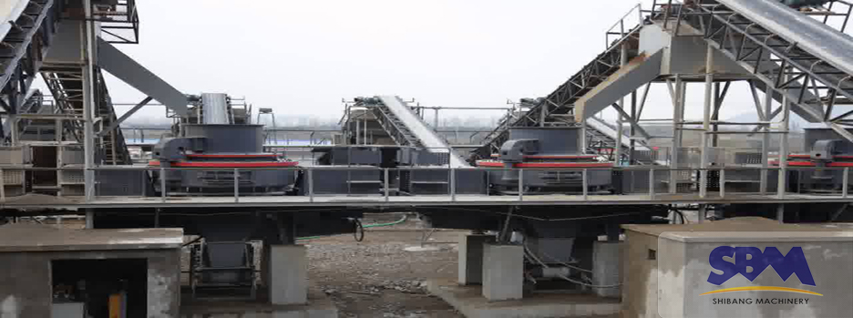

River Gravel Sand Making Machine Industry
With the accelerated pace of global economic integration, China's mining equipment industry in the international market gradually expanded. And in the international market, the breadth of application of mining equipment river gravel sand making machine, the demand for large unimaginable. Some developed countries of river gravel system sand machine needs gradual growth every year.
Sand Making Machine became the main building with sand, sand making machine industry has a good development trend, and has become a traditional and new entrepreneurship. Quality hard River gravel, with compression, wear resistant and other natural features, is an ideal green building material, is widely used in building and road construction and other industries.
River Gravel Sand Making Machine Works
Material from the hopper into the impact crusher, a material whirl crushing cavity being repeated twice or even probability impact, friction and grinding crushing effect. The material to be broken by the lower row of the discharge port. Throughout the crushing process, the material impact crushing each other on their own, without direct contact with the metal components, but shocks and lining materials, friction and grinding, which reduces contamination, extending the mechanical wear of time. Whirl chamber clever internal airflow from circulation, eliminate the dust pollution.
River Gravel Sand Making Machine Show

Process of River Gravel Sand Making Machine
River Gravel sand making machine is the most typical application is it adapted to the current artificial mechanism of sand industry, is a rod mill type sand making machine, impact type system sand machine, cone crusher, cut-through system sand machine of substitute products.It is simple and reasonable structure, from the crushing blow type, low use cost;Unique design of bearing installation and advanced the main shaft makes the machine has the characteristics of heavy load and high speed rotation. And have finely, coarse grinding function;Compared with the traditional sand making machine has high reliability and safety device, ensure that equipment and personal safety;Smooth operation, work, low noise, high efficiency and energy saving, high crushing efficiency;Small under the influence of material moisture content, moisture content can be up to 8%;Parts, low loss, all wearing parts adopt high quality wear-resistant materials at home and abroad, long service life. A few easy wear parts made from special hard wear-resistant material, small volume, light weight, easy to replace parts.
Application ofSand Making Machine
- Cobble stone (granite, limestone, andesite, diabase, Xuan Wuyan, etc.), ore tailings, stone chip of artificial sand.
- Construction aggregate, highway road fabric, cushion material, asphalt concrete and cement concrete aggregate production.
- Engineering of water conservancy and hydropower, highway, highway, high speed railway and passenger dedicated line, bridge, airport runway, municipal engineering, high-rise building mechanism of sand production and stone plastic.
- Finely process mining, building materials, metallurgy, chemical, mining, cement, refractory material, abrasive etc material breakage.
Sand making machine is widely used in river pebbles, rocks (limestone, granite, diabase, andesite, Xuan Wuyan etc.), ore tailings, stone chip artificial sand, engineering water conservancy and hydropower, highway, highway and railway, passenger dedicated line, bridge, airport runway, municipal engineering, high-rise building mechanism of sand production and stone plastic, construction aggregate, highway road fabric, cushion material, asphalt concrete and cement concrete aggregate production, glass, quartz sand and other high purity materials production. At the same time, the grinding PPK finely process in the fields of mining, building materials, metallurgy, chemical industry, mines, refractories, cement, abrasive etc material crushing also showed great superiority.
Services
Supply the most current design and technical expertise;Supply parts sales and training service far beyond the initial sale;Your profits with quality parts and expert service.
+86-21-58386189,58386176 sbm@stoneminingmachine.com Fax: +86-21-58385681